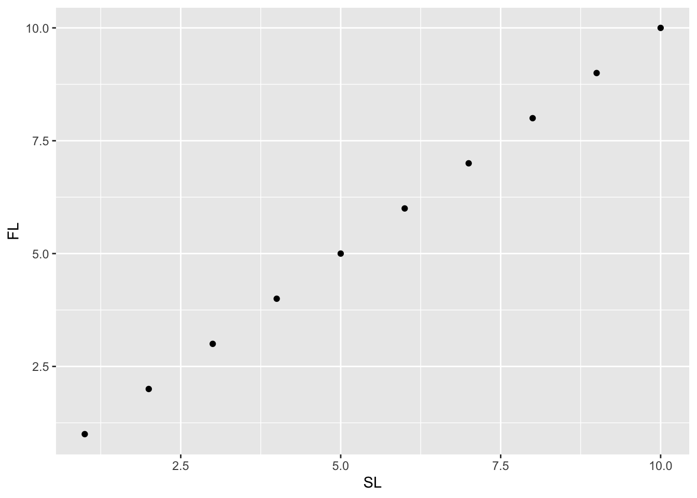
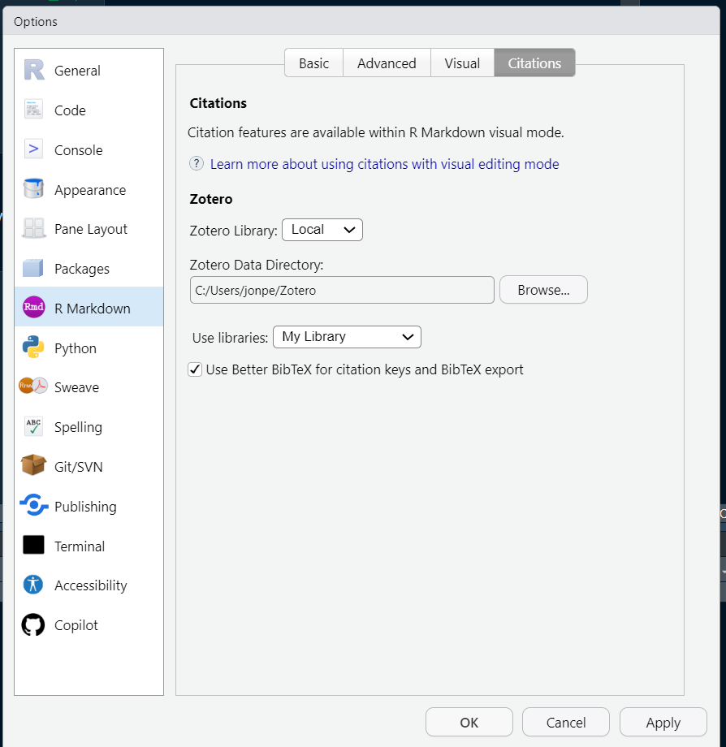
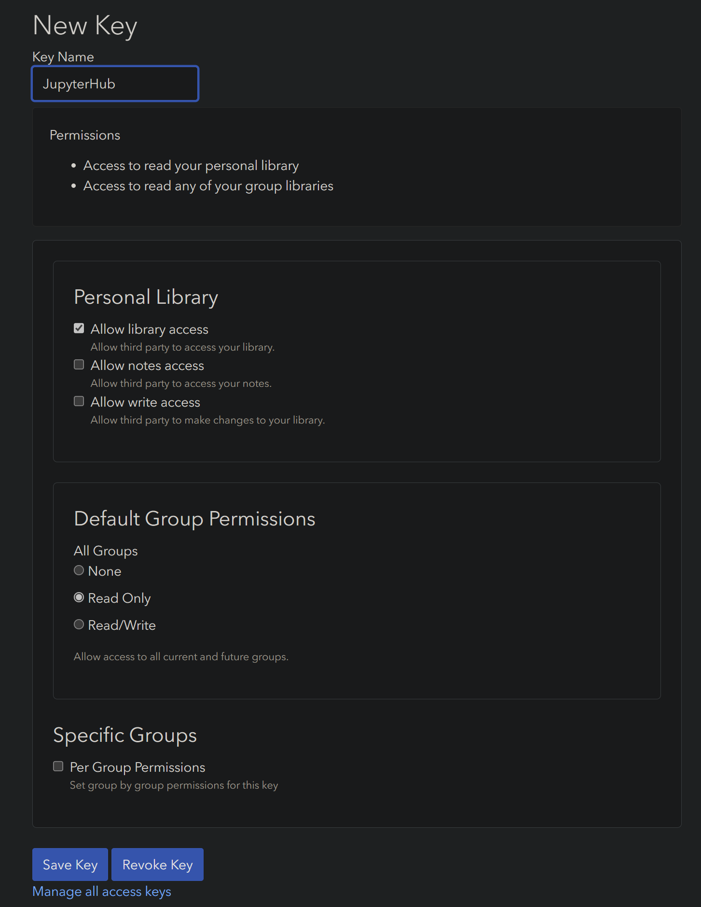
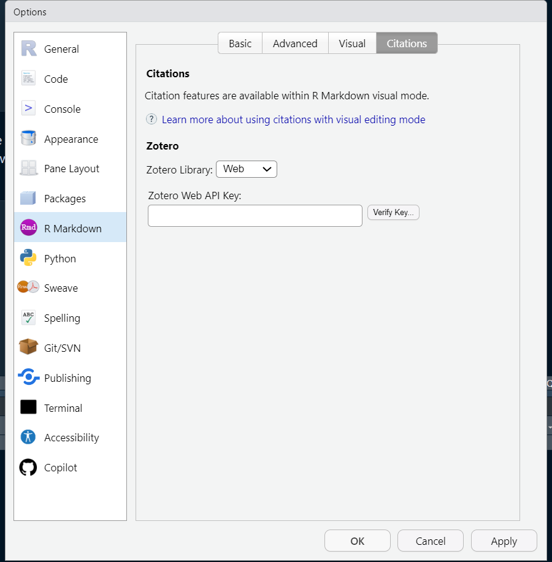

# Create a dummy dataset
dat <- data.frame(species = rep('Mycteroperca microlepis', 10),
gear = rep(c('HL','LL','SP','UA'),5),
age = 1:20,
size = seq(1,100,5))
write.csv(dat, file = 'dat_colval.csv',row.names = F)Cross-references, bibliography and citations in Quarto files
Learning Objectives
- Insert citations and a bibliography into a Quarto document
- Customize citation and bibliography styles
- Add cross-referencing for tables, figures, and sections to direct your readers through your document
- Make dynamic captions for tables and figures
Today’s Carpentries Tutorials
During these workshops, we will be using the Carpentries Incubator Reproducible Publications with RStudio set of tutorials from UCSB (https://carpentries-incubator.github.io/reproducible-publications-quarto/) for most of our content. While we will be walking everyone through the tutorials, it may be helpful for you to look through the tutorials prior to attending. This will give you a feel for what we will be covering during each session, and will highlight some areas where you may need some additional work or assistance.
For this session, we will be covering the following topic:
We will again be relying on the forked repository from previous sessions. If you have not yet set up your forked repository in RStudio, follow the instructions here: https://nmfs-opensci.github.io/Quarto-Workshop-2024/tutorials/tutorial-2.html#instructions-for-forking-the-carpentries-example-repository
Creating Dynamic Captions
We can create captions for tables and figures that are dynamic based on our code. We will be going through a quick example of how this can be done using knitr. Below are a couple examples that were produced for one of the Quarto teams. Feel free to play around with this with your own variables and datasets.
Example 1: from a column value
If the information for our dynamic caption is contained within a column in the dataset (say, a single static column for the species or gear), we can extract the information from the columns of interest. Let’s create a dataset with a constant species and gear.
We can make a dynamic label in a few ways. If a caption with a similar format is going to be used multiple times throughout the document, it might be easiest to make this a function. Otherwise, we can just use a standard call to paste (note that paste0 is a special case of paste in which the separator argument is by default '' (no separator).
# Make dynamic label
# read in the data file
library(tidyverse)── Attaching core tidyverse packages ──────────────────────── tidyverse 2.0.0 ──
✔ dplyr 1.1.4 ✔ readr 2.1.5
✔ forcats 1.0.0 ✔ stringr 1.5.1
✔ ggplot2 3.5.1 ✔ tibble 3.2.1
✔ lubridate 1.9.3 ✔ tidyr 1.3.1
✔ purrr 1.0.2
── Conflicts ────────────────────────────────────────── tidyverse_conflicts() ──
✖ dplyr::filter() masks stats::filter()
✖ dplyr::lag() masks stats::lag()
ℹ Use the conflicted package (<http://conflicted.r-lib.org/>) to force all conflicts to become errorsdat <- read.csv('dat_colval.csv') %>%
mutate(gear = factor(gear),
gear_name = factor(case_when(gear == 'HL' ~ 'hook and line',
gear == 'LL' ~ 'longline',
gear == 'SP' ~ 'spear',
gear == 'UA' ~ 'unassigned gear code')))
# extract the species name
spp <- unique(dat$species)
# extract the gear
gear <- levels(dat$gear)
# extract the gear name
gear_name <- levels(dat$gear_name)
# paste the gear name and its abbreviation together with the abbreviation inside parentheses
gear_caption_string <- paste0(gear_name,' (',gear,')')
# paste together the caption
cap <- paste0('Age and length of ',
spp,
' from ',
paste(gear_caption_string[-length(gear_caption_string)],collapse = ', '),
', and ',
gear_caption_string[length(gear_caption_string)],
'.')
cap[1] "Age and length of Mycteroperca microlepis from hook and line (HL), longline (LL), spear (SP), and unassigned gear code (UA)."We can assign the caption using the #| tbl-cap option in our table code chunk. To input an r variable, we use the following notation:
#| tbl-cap: !expr capBy using !expr we can insert an R variable or even a full expression into the caption. This example inserts the value of the R variable cap into the caption.
# Make table using kable
library(knitr)
kable(dat)| species | gear | age | size | gear_name |
|---|---|---|---|---|
| Mycteroperca microlepis | HL | 1 | 1 | hook and line |
| Mycteroperca microlepis | LL | 2 | 6 | longline |
| Mycteroperca microlepis | SP | 3 | 11 | spear |
| Mycteroperca microlepis | UA | 4 | 16 | unassigned gear code |
| Mycteroperca microlepis | HL | 5 | 21 | hook and line |
| Mycteroperca microlepis | LL | 6 | 26 | longline |
| Mycteroperca microlepis | SP | 7 | 31 | spear |
| Mycteroperca microlepis | UA | 8 | 36 | unassigned gear code |
| Mycteroperca microlepis | HL | 9 | 41 | hook and line |
| Mycteroperca microlepis | LL | 10 | 46 | longline |
| Mycteroperca microlepis | SP | 11 | 51 | spear |
| Mycteroperca microlepis | UA | 12 | 56 | unassigned gear code |
| Mycteroperca microlepis | HL | 13 | 61 | hook and line |
| Mycteroperca microlepis | LL | 14 | 66 | longline |
| Mycteroperca microlepis | SP | 15 | 71 | spear |
| Mycteroperca microlepis | UA | 16 | 76 | unassigned gear code |
| Mycteroperca microlepis | HL | 17 | 81 | hook and line |
| Mycteroperca microlepis | LL | 18 | 86 | longline |
| Mycteroperca microlepis | SP | 19 | 91 | spear |
| Mycteroperca microlepis | UA | 20 | 96 | unassigned gear code |
Example 2: from a column header
If instead our dynamic information is in a column header, we can use the colnames function to extract the appropriate information. This may be useful if the structure of the data is constant but a value column changes names across datasets. The below example is a bit trivial, but may be useful for certain cases.
# Create a dummy dataset
dat <- data.frame(species = rep('Mycteroperca microlepis', 10),
SL = 1:10,
FL = 1:10)
write.csv(dat, file = 'dat_colname.csv',row.names = F)# Make dynamic label
# read in the data file
dat <- read.csv('dat_colname.csv')
# extract the species name
spp <- unique(dat$species)
# extract the length types
param_1 <- colnames(dat)[2]
param_2 <- colnames(dat)[3]
# paste together the caption
cap <- paste(spp,
param_1,
'vs.',
param_2
)
cap[1] "Mycteroperca microlepis SL vs. FL"# Make plot using ggplot
library(ggplot2)
ggplot(dat) + geom_point(aes(x = SL, y = FL))

Zotero and Quarto: a Powerful Pairing
Zotero is a free, open-source reference manager that integrates directly into RStudio and Quarto. Reference managers make life easier by providing a central location to store, access, and organize your reference collection. Zotero takes this to the next level by allowing you to directly add references from your library into your Quarto document. Zotero stores its references in a flat text-based BibTex file, rather than a proprietary file format only readable by a single application. This makes sharing reference libraries across teams much easier and more open than with other, paid reference management software.
Import into Zotero from EndNote or Mendeley
If you currently use a different reference manager, you can import your library into Zotero. The steps are a bit different depending which reference manager you currently use:
To import from EndNote, you will first need to export your EndNote references as an XML file, which you can then import into Zotero. This link provides instructions for doing this: https://www.zotero.org/support/kb/endnote_import
Unfortunately, if you rely on EndNote Groups for organizing your references, this method will not preserve group structure. Zotero does have its own organizing feature, called Collections. If you wish to retain the group structure from EndNote as a set of Zotero Collections, you will either need to export groups into individual XML files and import groups individually, or export your full library as one file and re-organize your references into collections after import.Importing from Mendeley is a bit easier. Zotero can connect directly to a Mendeley online library: https://www.zotero.org/support/kb/mendeley_import
Connect Zotero and RStudio
Once your Zotero library is set up, you will need to connect it to RStudio. If you’re using RStudio and Zotero on your local machine, navigate to RStudio, click on the Tools menu in the top menu bar, and click on Global Options. In the dialogue box that pops up, click on R Markdown on the left side, and then Citations in the top menu:

Select the Local option in the Zotero Library dropdown menu. Click the Browse button and navigate to the folder where your Zotero library data is stored. If you have multiple Zotero libraries, select the one you would like to use. Check the box for Use Better BibTeX for citation keys and BibTeX export; this option gives you many more fields and reference types to choose from when adding references.
You can also connect Zotero if you are using RStudio on a machine that does not have access to a local Zotero installation or in the cloud (our JupyterHub, for example). Zotero provides a web-based service that will synchronize your library between your local installation and an online account. You will need to create a Zotero account, which you will then need to link with a local Zotero install to synchronize your library (Edit -> Settings -> Sync).
Once your Zotero library is synced to Zotero Web, create a Zotero API key to access your library from RStudio. Give your key a name (like RStudio or JupyterHub), and give the key Read Only access to your personal library and groups:

Click Save Key, then copy the resulting string to your clipboard. Back in your RStudio Citations options, select the Web dropdown item next to Zotero Library, and paste your Web API Key copied from Zotero into the appropriate space:

You can verify that the key was created and copied over correctly by clicking the Verify Key button. Once you’ve verified that the key works, click OK, exit out RStudio, and re-open. If using JupyterHub, you may need to restart your JupyterHub instance. Next time you open a Quarto document in RStudio, you will be able to insert a citation directly from your Zotero library using the @ symbol.